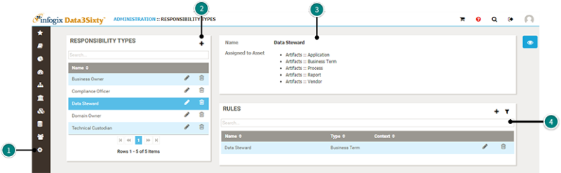
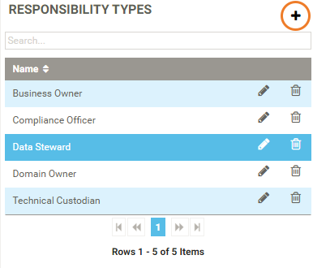

A responsibility in Infogix Data3Sixty can be thought of as a user role. Responsibility Types identify the types of responsibility and to what objects those responsibilities are relevant to. It can indicate ownership or other responsibilities related to those objects they are assigned, including workflows.
There are 3 steps to enabling users or groups to own or access certain objects:

To open the Responsibility Types page, click the Administration icon on the left of the screen, then select Responsibilities.
The Responsibility Types panel lists the default Infogix Data3Sixty user roles, as well as any new responsibility types you have created, see Creating a new responsibility type.
When you highlight a responsibility, you will see the corresponding assets that belong to that responsibility in the panel on the right of the screen.
From the Rules panel you can assign access to assets to users or groups.
There are three default responsibilities:
You can use these default responsibilities in your Infogix Data3Sixty setup, or you can edit them to match specific titles in use at your organization. Or, you can create a completely new responsibility type:

You can assign permissions to a responsibility to indicate whether a person who has that responsibility can simply view the items that they are responsible for, or whether they can create them, update them or delete them, see Assigning permissions.